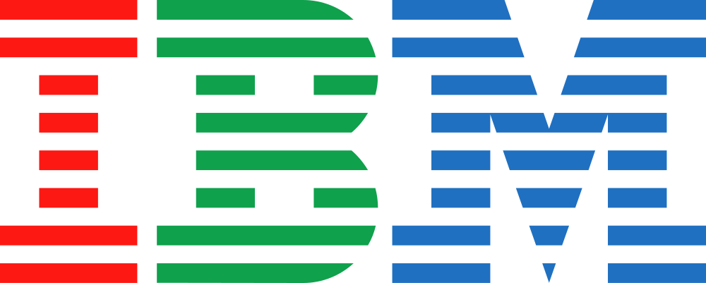

Formateurs expérimentés
Des experts de terrain, pas de simples donneurs de cours.
Plus de 9 filières de certification officielle, du diagnostic des besoins à l'obtention d'une certification reconnue internationalement.
Aquila Academy, c'est plus de 9 filières de certification officielle — Microsoft, Cisco, ISO, IBM, ITIL, PRINCE II, COBIT, PMP, Oracle Java — et bien d'autres. Nous vous accompagnons dans votre parcours de formation, du diagnostic des besoins à l'obtention de votre certification. Vos collaborateurs deviennent des experts reconnus, un atout pour votre entreprise.
L'écosystème IT évolue rapidement. Rester compétitif signifie investir dans le développement continu des talents. Aquila Academy s'appuie sur un réseau de partenaires internationaux — États-Unis, Canada, France, Inde, Tunisie, Maroc, Cameroun, Burkina Faso et bien d'autres — pour apporter une formation de qualité mondiale, adaptée au contexte africain.
Grâce à nos partenaires, nous vous accompagnons dans tous vos besoins en matière de certifications.

IBMÉvaluation du niveau initial, des compétences existantes et des objectifs à atteindre.
Cours théoriques et pratiques avec des formateurs, et accès à une plateforme e-learning partenaire. En intra-entreprise, à distance ou en format mixte.
Exercices pratiques, examens blancs, séances de coaching et tutorat personnalisé selon les besoins.
Passage de l'examen officiel accrédité, avec le support logistique associé (centre d'examen, surveillance).
Suivi des acquis, retours en contexte professionnel et accès aux communautés de certification.
Formation aux technologies Microsoft Cloud (Azure), Microsoft 365 (bureautique et collaboration) et Dynamics (ERP/CRM). Adaptée aux administrateurs système, administrateurs cloud, développeurs et professionnels de la productivité.
Formation aux réseaux Cisco : routage, commutation et cybersécurité réseau, avec les parcours CCNA (débutant), CCNP (confirmé) et sécurité. Adaptée aux ingénieurs réseau, administrateurs d'infrastructure et responsables sécurité.
Formation aux normes ISO 9001 (qualité), ISO 27001 (sécurité de l'information) et ISO 20000 (gestion des services IT). Adaptée aux consultants conformité, auditeurs internes et managers IT.
Formation aux technologies et produits IBM : cloud, analytique, intelligence artificielle et infrastructure. Adaptée aux profils data, aux développeurs et aux administrateurs cloud.
Formation à la gestion IT selon le cadre ITIL : centre de services, gestion des incidents, des changements et des problèmes. Adaptée aux managers IT, responsables support et coordinateurs de services.
Formation à la méthode PRINCE II de gestion de projets : structure, processus et contrôle. Adaptée aux chefs de projets IT, directeurs de programme et responsables gouvernance.
Formation au cadre COBIT de gouvernance IT : évaluation, contrôle et reporting. Adaptée aux directeurs IT, consultants gouvernance et auditeurs.
Formation à la gestion de projets selon le cadre du Project Management Institute : phases, processus, leadership et communication. Adaptée aux chefs de projets de tous secteurs et aux responsables de transformation.
Formation au langage Java, à ses frameworks et au développement backend, avec les parcours Oracle Java Associate et Professional. Adaptée aux développeurs Java, architectes backend et responsables de plateforme.
Des experts de terrain, pas de simples donneurs de cours.
Un contenu qui reflète les dernières versions des technologies enseignées.
Nous adaptons les horaires et le rythme à votre contexte professionnel.
Nous vous accompagnons jusqu'au passage de l'examen officiel, examens blancs compris.
Une certification continue de valoriser un profil bien après son obtention.
Un accès aux ressources et aux communautés de nos partenaires à l'international.
Parlons de vos besoins en compétences : nous construisons ensemble un parcours adapté à votre équipe et à votre calendrier.